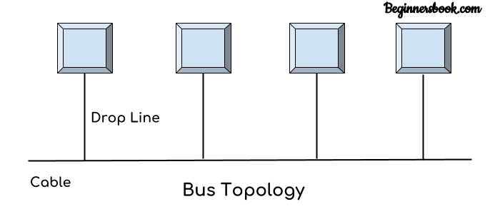
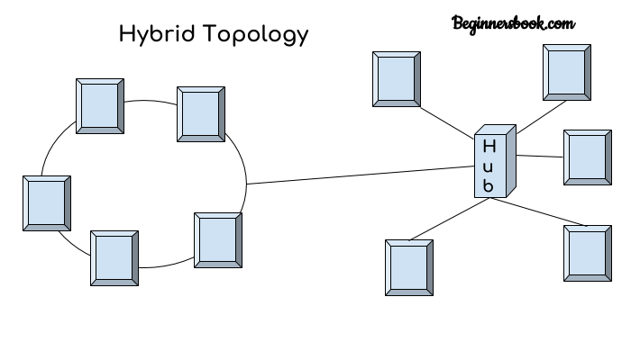

Network
There are five types of topology in computer networks
Types of Topology
1. Mesh Topology
2. Star Topology
3. Bus Topology
4. Ring Topology
5. Hybrid Topology
Mesh Topology

Mesh Topology
In mesh topology each device is connected to every other device on the network through a dedicated point-to-point link. When we say dedicated it means that the link only carries data for the two connected devices only. Lets say we have n devices in the network then each device must be connected with (n-1) devices of the network. Number of links in a mesh topology of n devices would be n(n-1)
Advantages of Mesh topology
1. No data traffic issues as there is a dedicated link between two devices which means the link is only available for those two devices.
2. Mesh topology is reliable and robust as failure of one link doesn’t affect other links and the communication between other devices on the network.
3. Mesh topology is secure because there is a point to point link thus unauthorized access is not possible.
4. Fault detection is easy.
Disadvantages of Mesh topology
1. Amount of wires required to connected each system is tedious and headache.
2. Since each device needs to be connected with other devices, number of I/O ports required must be huge.
3. Scalability issues because a device cannot be connected with large number of devices with a dedicated point to point link.
Star Topology

Star Topology
In star topology each device in the network is connected to a central device called hub. Unlike Mesh topology, star topology doesn’t allow direct communication between devices, a device must have to communicate through hub. If one device wants to send data to other device, it has to first send the data to hub and then the hub transmit that data to the designated device.
Advantages of Star topology
1. Less expensive because each device only need one I/O port and needs to be connected with hub with one link.
2. Easier to install
3. Less amount of cables required because each device needs to be connected with the hub only.
4. Robust, if one link fails, other links will work just fine.
5. Easy fault detection because the link can be easily identified.
Disadvantages of Star topology
1. If hub goes down everything goes down, none of the devices can work without hub.
2. Hub requires more resources and regular maintenance because it is the central system of star topology.
Bus Topology

Bus Topology
In bus topology there is a main cable and all the devices are connected to this main cable through drop lines. There is a device called tap that connects the drop line to the main cable. Since all the data is transmitted over the main cable, there is a limit of drop lines and the distance a main cable can have.
Advantages of bus topology
1. Easy installation, each cable needs to be connected with backbone cable.
2. Less cables required than Mesh and star topology
Disadvantages of bus topology
1. Difficultly in fault detection.
2. Not scalable as there is a limit of how many nodes you can connect with backbone cable.
Ring Topology

Ring Topology
In ring topology each device is connected with the two devices on either side of it. There are two dedicated point to point links a device has with the devices on the either side of it. This structure forms a ring thus it is known as ring topology. If a device wants to send data to another device then it sends the data in one direction, each device in ring topology has a repeater, if the received data is intended for other device then repeater forwards this data until the intended device receives it.
Advantages of Ring Topology
1. Easy to install.
2. Managing is easier as to add or remove a device from the topology only two links are required to be changed.
Disadvantages of Ring Topology
1. A link failure can fail the entire network as the signal will not travel forward due to failure.
2. Data traffic issues, since all the data is circulating in a ring.
Hybrid Topology

Hybrid Topology
A combination of two or more topology is known as hybrid topology. For example a combination of star and mesh topology is known as hybrid topology.
Advantages of Hybrid topology
1. We can choose the topology based on the requirement for example, scalability is our concern then we can use star topology instead of bus technology.
2. Scalable as we can further connect other computer networks with the existing networks with different topologies.
Disadvantages of Hybrid topology
1. Fault detection is difficult.
2. Installation is difficult.
3. Design is complex so maintenance is high thus expensive.
tag: . . .